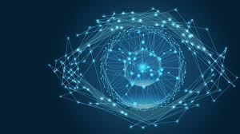

O que é visão computacional?

A computer vision é um subcampo da inteligência artificial (IA) que equipa máquinas com a capacidade de processar, analisar e interpretar entradas visuais, como imagens e vídeos. Ela usa aprendizado de máquina para ajudar computadores e outros sistemas a obter informações significativas a partir de dados visuais.
A computer vision pode ser retratada como a interação entre três grandes processos, cada um trabalhando em conjunto e informando uns aos outros: reconhecimento, reconstrução e reorganização. O reconhecimento de imagens consiste em identificar ações, objetos, pessoas, lugares e escrita em imagens ou vídeos digitais. A reconstrução deriva as características tridimensionais dessas entidades, enquanto a reorganização infere as relações entre as entidades.
Como a visão computacional funciona
A imagem radiológica no diagnóstico de pneumonia é um caso de uso comum em computer vision. Os radiologistas têm que interpretar cuidadosamente as radiografias de tórax, um processo que pode ser propenso a erros e demorado devido à sutileza dos sintomas de pneumonia e às suas semelhanças com outras condições pulmonares.2 Um sistema de computer vision pode ajudar.
Há vários tipos de modelos e abordagens para tarefas de computer vision, mas o exemplo hipotético a seguir ilustra um fluxo de trabalho comum:
- Coleta de dados
- Pré-processamento
- Seleção de modelos
- Treinamento de modelo
Tarefas da visão computacional
Os algoritmos de computer vision podem ser treinados em uma ampla variedade de tarefas, algumas das quais incluem:
- Reconhecimento de imagens
- Classificação de imagens
- Detecção de objetos
- Segmentação de imagens
- Rastreamento de objetos
- Compreensão de cenas
- Reconhecimento facial
- Estimativa de poses
- Reconhecimento óptico de caracteres
- Geração de imagens
- Inspeção visual
Aplicações de visão computacional
Como um campo maduro da IA, a computer vision passou por muitos avanços, levando a uma ampla gama de casos de uso. Veja a seguir algumas aplicações do mundo real da computer vision:
Agricultura
Câmeras, drones e satélites capturam imagens de alta resolução de culturas e áreas agrícolas. Tecnologias de computer vision analisam essas imagens para auxiliar na avaliação da saúde das plantas e identificar pragas e ervas daninhas para uma aplicação mais direcionada de herbicidas.
Veículos autônomos
No setor automotivo, carros autônomos compõem um modelo 3D de seu ambiente usando uma combinação de câmeras, lidar, radar e sensores. Em seguida, aplicam detecção de objetos, segmentação de imagens e compreensão de cenas para uma navegação segura, evitando obstáculos como pedestres e outros veículos e detectando com precisão as funcionalidades da estrada, como faixas, semáforos e sinais de trânsito.
Saúde
A geração de imagens médicas é uma área de aplicação fundamental para a computer vision. Por exemplo, a detecção de objetos pode automatizar a análise de imagens, localizando e identificando possíveis marcadores de doenças em raios-X, tomografia computadorizada (TC), ressonância magnética e ultrassom. Além disso, a segmentação de instâncias pode delinear boundaries específicas de órgãos, tecidos e tumores, auxiliando em um diagnóstico mais preciso que pode informar melhor a tomada de decisão para tratamentos e cuidados com o paciente.
Fabricação
Os sistemas de computer vision ajudam no gerenciamento de inventário, escaneando itens para determinar os níveis de estoque. Eles também podem potencializar o controle de qualidade, reconhecendo defeitos em tempo real. Esses sistemas analisam imagens de produtos e podem sinalizar falhas ou inconsistências de forma rápida e precisa em comparação com os inspetores que usam sua própria visão humana.
Varejo e comércio eletrônico
A tecnologia Just Walk Out da Amazon, por exemplo, usa computer vision em pequenas lojas de varejo e serviços de alimentação para rastrear as seleções de clientes e automatizar a experiência. Os clientes podem simplesmente pegar seus itens e sair sem fila nos balcões de pagamento.
As lojas online podem usar realidade aumentada com reconhecimento facial e estimativa de poses para experiências de prova virtual, permitindo que os clientes visualizem como as roupas, óculos ou maquiagem ficarão neles antes de comprar.
Robótica
Assim como os veículos autônomos, os robôs usam câmeras, lidar e sensores para mapear seus arredores. Em seguida, eles aplicam algoritmos de computer vision para realizar suas tarefas, como auxiliar cirurgiões em procedimentos complexos, navegar por armazéns para transportar mercadorias, escolher apenas produtos maduros e colocar objetos em linhas de montagem.
Exploração espacial
A detecção de objetos pode ajudar as espaçonaves a localizar e evitar perigos durante o pouso, enquanto os robôs podem implementar o mesmo recurso para navegar em terrenos.7 A classificação de imagens pode ser empregada para categorizar asteróides, meteoros e até detritos espaciais, enquanto o rastreamento de objetos monitora as trajetórias desses objetos astronômicos.